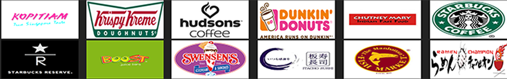
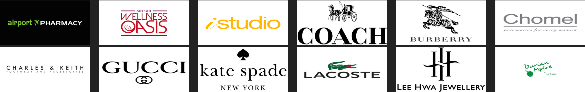

Singapore Changi Airport is not just a convinient stopover to appease hunger travellers. With over 80 restaurants, cafes and bars, it's a food paradise where even locals go when they're hungry. Here's a selection of some of the best dining venues at Changi.
Singapore Changi Airport is not just famous for dining but is also famous for its duty-free shopping. Here's a selection of some of the best shopping venues at Changi.
*NOTE: The above listed venues are just examples although there are many shops and dining venues at Singapore Changi International Airport. For further information please visit the Changi Airport website.